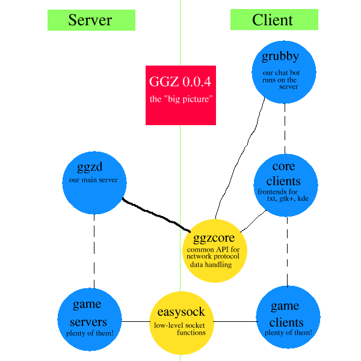
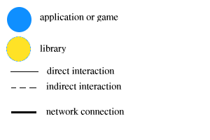
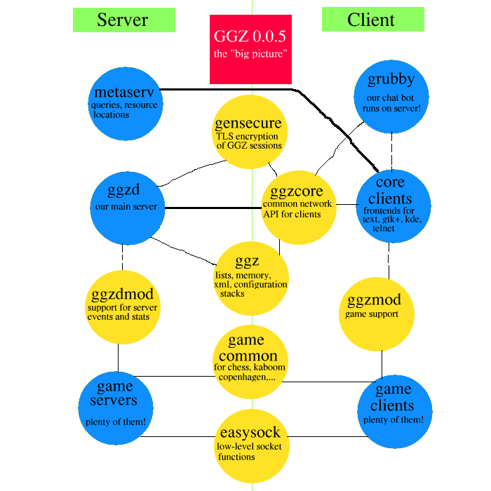

The "big picture" - an overview about the source code structure of GGZ
Often people find it hard to get to know all the details about the project. This page addresses this
problem directly by giving a graphical overview.
The first image shows the current (stable) release, GGZ 0.0.4, which came out in June 2001.
Below the image you'll find another one, explaining what the graphical elements mean.
Please note that grubby, although a client program, makes only sense to be run on the server.
Libraries which are exactly on the middle green line must be installed on both the client and
server side, they provide common functionality for both sides.


For 0.0.5, a lot of things will be changed. Not everything is 100% fixed yet, but it seems that the following
representation is what you'll see when the release appears. Some issues to deal with:
- whether the Gnome client gets ready in time or not
- which components will make use of the meta server
- which parts of the games to be placed into ggz-games-libs
If someone is a graphics freak (s)he could create a "big picture" which does also include external
library dependencies (like OpenSSL, Expat or GUI kits) and package associations.
Also not all connections are necessary, e.g. there might be servers which don't provide TLS, or games
(like the KDE ones) which don't use easysock, ...
Therefore, an in-depth overview (could this be generated automatically?) should contain every single
library and application which exists in and around GGZ.

Josef Spillner, dr_maux@users.sourceforge.net
22.10.2001